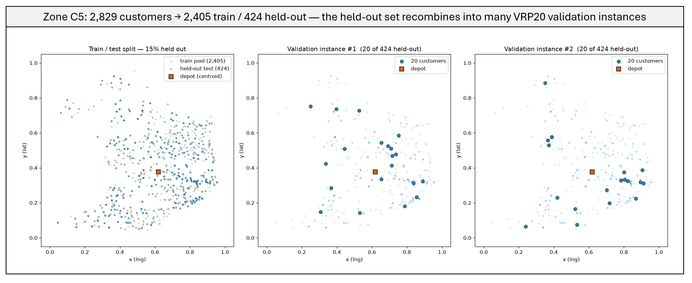
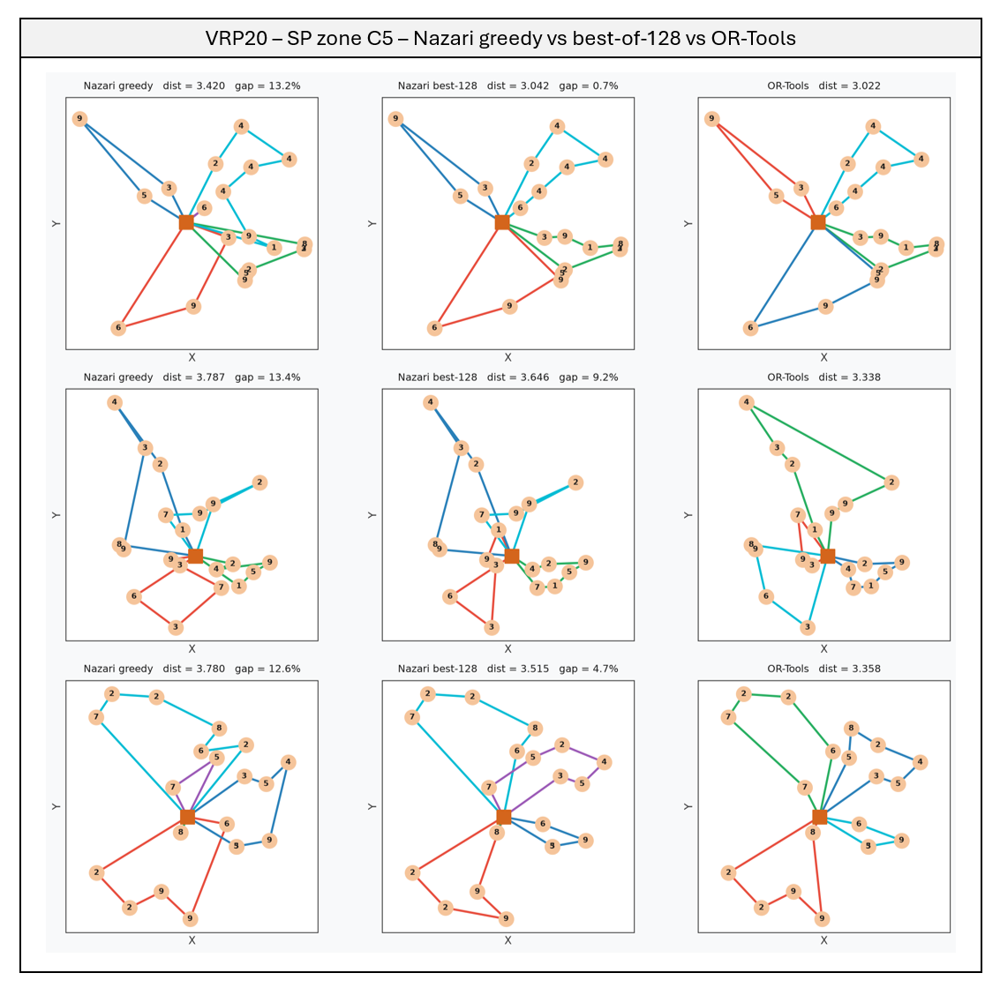
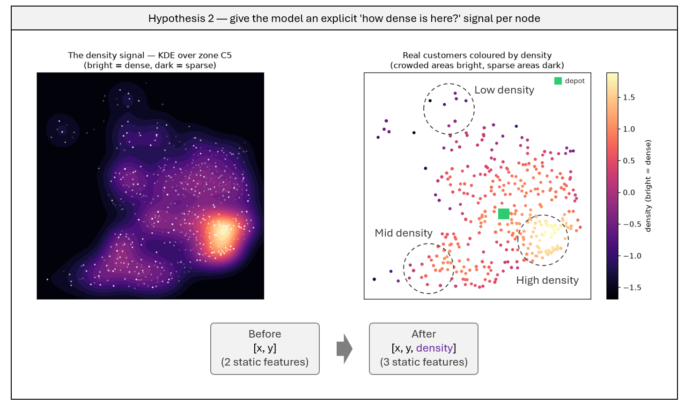
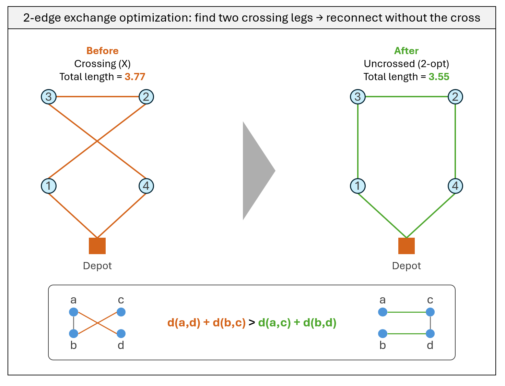
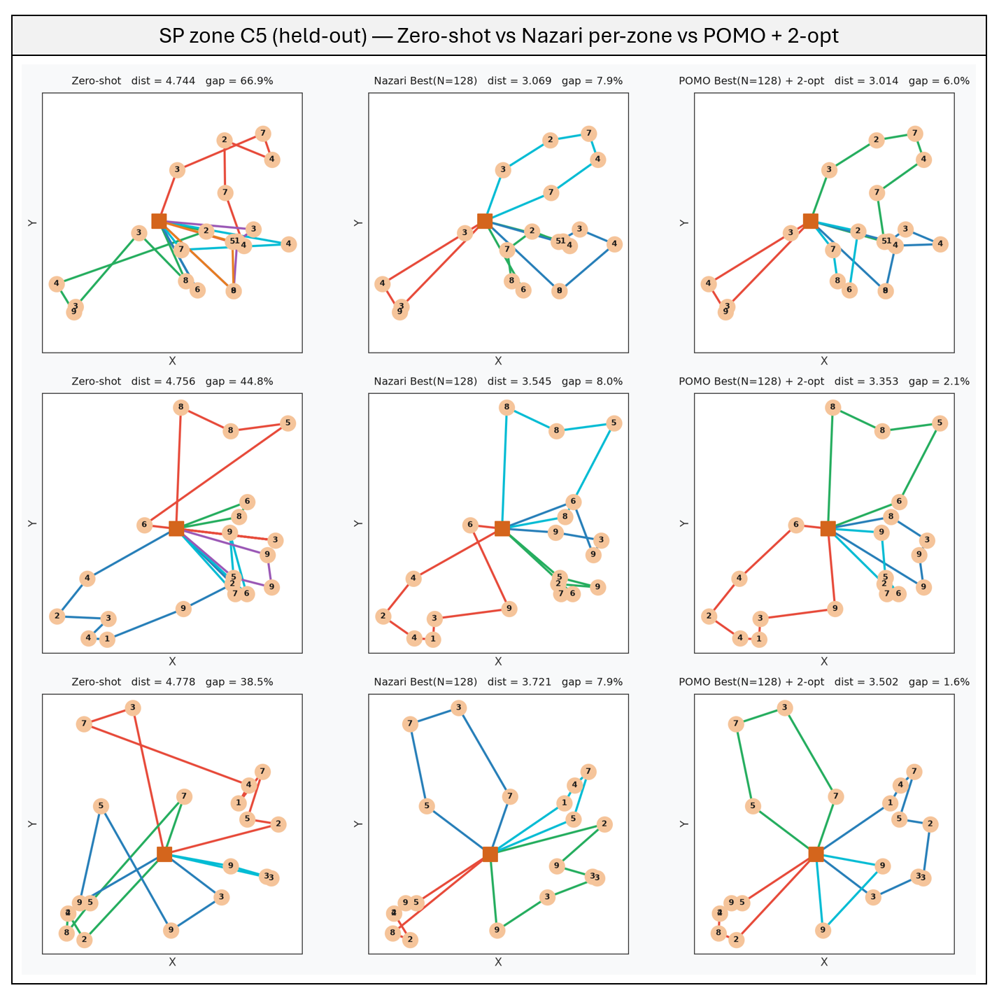

Per-Zone Vehicle Routing (Part II): Closing the Zero-Shot Gap on Real São Paulo Data
This is Part II, continuing directly from Part I, which reproduced Nazari et al. (2018) and applied it zero-shot to real São Paulo delivery data — exposing a 63.8% gap (26.9% with best-of-128 sampling) against OR-Tools. This page covers how that gap was closed. Full technical detail — code, training scripts, hypothesis logs — is in the GitHub repo.
TL;DR
- Training the exact same model on a single São Paulo zone’s own customers — instead of generic synthetic data — cuts the zero-shot gap from 86.0% to 14.0% (greedy), with zero changes to the model architecture.
- Not every idea helped: adding an explicit “how crowded is this area” feature backfired, more than tripling the gap — a reminder that more input isn’t automatically better.
- Swapping the training signal for POMO — which grades routes against each other instead of a frozen reference — squeezes out another point or two, for free.
- A deterministic, zero-cost geometric cleanup (2-opt) shaves off further points, landing the final model at 3.8% from OR-Tools — down from 36.6% at the end of Part I.
The question Part I left open
Part I’s diagnosis was clean: a routing model trained on generic, uniformly-scattered customers falls apart on a real city — not because the model is too small, but because it never saw what a real city looks like. That’s a useful thing to know, but it’s not a fix. Part II asks the direct follow-up: if the model actually learns São Paulo’s own geography, does the gap close?
To keep the effort focused and every claim measurable, the work concentrates on one zone — C5 / Centro-Sul, the densest and hardest zone from Part I (36.6% gap under best-of-128). The logic: if an approach works on the hardest, most irregular zone, it should carry over to the easier ones. Every number below is measured on a held-out set — 15% of the zone’s real customers, never seen during training — so a good score can’t be explained by memorization.

Training on the target city closes most of the gap
The most direct fix for a model that never saw clustered geography is to train it on that geography directly. Three things make this concrete: each zone is normalized to its own bounding box (matching exactly how it’s evaluated), the train/test split is leakage-free, and training instances are sampled straight from real customers — no synthetic data needed.
| Model | Greedy gap | Best-of-128 gap |
|---|---|---|
| Zero-shot uniform (Part I baseline) | 86.0% | 36.6% |
| Trained on zone C5 | 14.0% | 6.6% |

Same architecture, same hyperparameters — just the right training data — and the gap collapses from 86% to 14% (greedy), 37% to 7% (best-of-128). This confirms Part I’s diagnosis directly: the barrier was never model capacity, it was what the model was asked to learn. This per-zone model becomes the new baseline the rest of this page tries to beat.
When more information backfires
An intuitive next step: if the model has to infer how crowded a neighborhood is, why not just tell it? A density value — computed once per customer from a kernel density estimate — was added as a third input feature alongside each customer’s coordinates.

| Model | Greedy gap | Best-of-128 gap |
|---|---|---|
| Without density feature | 14.0% | 6.6% |
| With density feature | 52.3% | 14.6% |
The feature made things worse, by a wide margin. The likely reason: the model can already infer local density from the 20 coordinates it sees, so the explicit feature added little signal — and the density values, on a much wider numeric scale than the [0,1] coordinates, likely overwhelmed the input. Worth noting as much as any win: a plausible-sounding feature idea was tested, measured, and dropped rather than kept on faith.
A smarter training signal, for free
The Kool baseline used in Part I works by freezing a copy of the model as a reference point. POMO (Kwon et al., 2020) takes a different approach: instead of a frozen copy, it exploits the fact that a route is a loop — starting from customer A, B, or C describes the same trip — and runs several versions of the same instance, each forced to start from a different customer. Those versions grade each other, the way a class average grades each individual student, with no frozen reference needed. It’s known to generalize better to unseen data, which is exactly the concern here.
Same model, same per-zone data as before — only the training signal changes.
| Model | Greedy gap | Best-of-128 gap |
|---|---|---|
| Per-zone (Kool baseline) | 14.0% | 6.6% |
| Per-zone (POMO) | 11.9% | 5.5% |
A modest but consistent gain across both decoding strategies — small, but real, and it comes at no extra inference cost.
A cheap geometric polish: 2-opt
Not a training change at all — just a cleanup rule applied to whatever route the model already produced. Whenever two legs of a route cross, forming an X, reconnecting them the other way is always shorter, by simple geometry (the triangle inequality). Repeat until no crossing is worth undoing.

| Model | Best-of-128 | Best-of-128 + 2-opt |
|---|---|---|
| Per-zone (Kool baseline) | 6.6% | 4.7% |
| Per-zone (POMO) | 5.5% | 3.8% |
It costs nothing — no training, no retraining, just a handful of geometric checks — and it shaves off roughly two more points from every variant, on top of gains that already came from training data and the learning signal.
The whole story, one table
Every row below is measured on the same 32 held-out instances of zone C5:
| Step | Lever | Greedy gap | Best-of-128 gap |
|---|---|---|---|
| Zero-shot uniform (Part I baseline) | — | 86.0% | 36.6% |
| Train on the target zone | Data | 14.0% | 6.6% |
| Switch to POMO | Learning signal | 11.9% | 5.5% |
| Add 2-opt cleanup | Decoding | — | 3.8% |

From 36.6% to 3.8%, without changing the model’s architecture at all. The wins came from three different places — the training data, the training signal, and a free geometric cleanup — stacked on top of each other.
What this shows
- Zero-shot doesn’t transfer, but the fix isn’t a bigger model — it’s the right training data. Training on the target zone’s own customers, with no architecture change, does most of the work: 86% to 14%.
- A smarter training signal and a cheap cleanup both add real, if smaller, gains — for free. POMO and 2-opt together take the per-zone model from 6.6% to 3.8%, at no extra training or inference cost worth mentioning.
- Not every reasonable-sounding idea pays off. The density feature was a sound hypothesis, tested rigorously, and rejected because it made things worse — worth stating plainly rather than quietly dropping.
This was deliberately scoped to one zone, one problem size, and Euclidean distances — a controlled test of whether the fix works, not a production benchmark. Extending it to the other four zones, variable fleets, and real road distances is the natural next step; the technical write-up in the GitHub repo covers the full scope and limitations.
Code on GitHub.